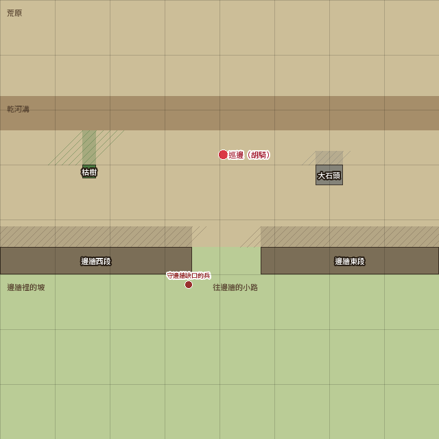
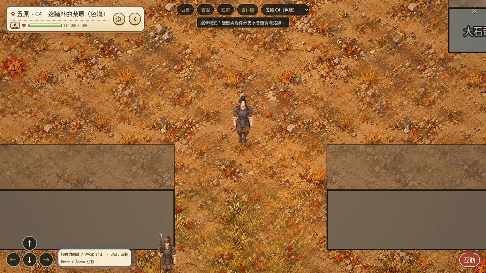

C4 邊牆外的荒原
城外・一張 64×64 格・出入口：大地圖（往北，靈山）


遊戲裡：地面是地板組（秋天，修好那幾年）；屋子、院牆、店鋪、市樓已經換成 E3 角度的圖，城牆城門和小東西還是色塊；鏡頭 wide；人物暫用現有的走路圖，車暫用馬
事件點（紅點）
- 巡邊（胡騎）：第三章 第一次實戰
路人（1 個；圓點顏色：兵紅、叫賣橘、算命紫、要飯灰、孩子綠、車是褐色方塊、其他藍綠；線是來回走的範圍）
- 守邊牆缺口的兵：站著
物件（深色是佔地、擋路；斜線是往上長、人走到後面會被蓋住）
- 邊牆西段：夯土的邊牆，到地圖西邊
- 邊牆東段：中間 28–37 欄是缺口
- 枯樹
- 大石頭